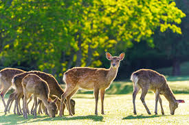
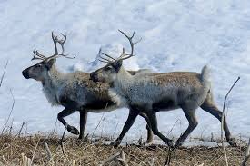

Олени — крупные животные, размер разных видов может колебаться от 55 см в холке и веса 10-15 кг у водяного оленя до 155 см высоты и веса свыше 300 кг у благородного оленя. Все виды оленей имеют изящное тело, тонкие, стройные ноги, длинную шею и относительно небольшую голову, которую венчают рога.
Питается благородный олень самой разнообразной пищей. ... Большим подспорьем в зимний период времени для оленей являются жёлуди, которые животное добывает из-под снега. Также в пищу идут каштаны, всевозможные орехи, семена многих видов растений. Грибы, лишайники, плоды, ягоды — всё идет в пищу благородному оленю.
 